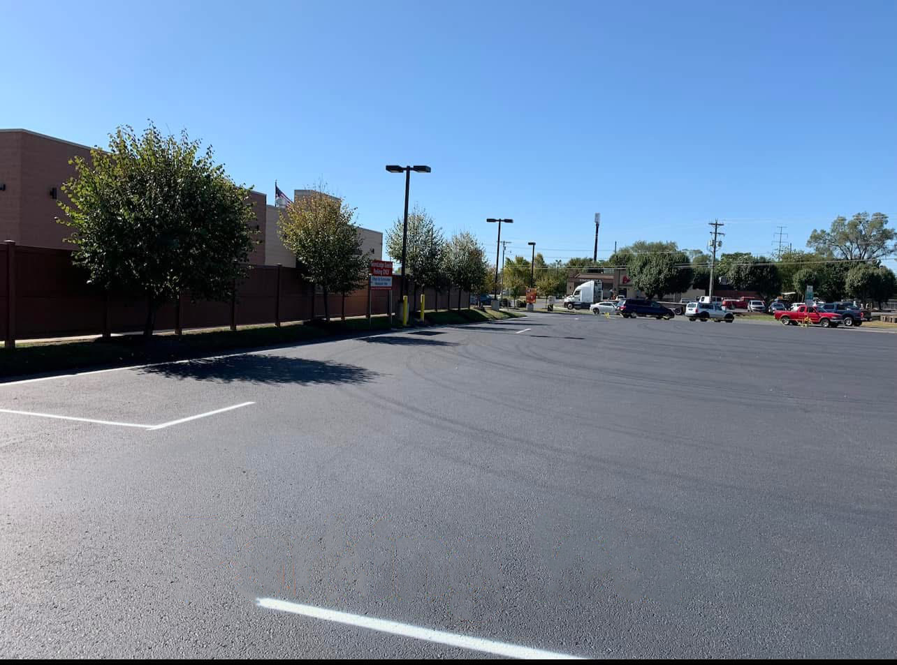

Parking Lot Paving

A parking lot fails differently from a house driveway. Cars turn in the same spots, delivery trucks sit in the same lanes, and a low area becomes a pond that customers walk through. A+ Paving & Landscaping paves and stripes commercial lots in the Eastern Panhandle, including the Martinsburg lots we already show in the gallery, and in the Chambersburg area of Pennsylvania when the site can be reached.
Drainage across a wide, flat surface
House drives can be crowned and sent to a ditch. A lot is wider, flatter, and usually boxed in by curbs, sidewalks, or neighboring pavement. If the stone base is thin, clay underneath holds water and the asphalt flexes in the wheel paths. Freeze-thaw then opens those paths into potholes. The base has to be graded so water reaches an inlet or the edge of the lot instead of sitting in the drive lane. That grading is part of the paving job, not a cosmetic extra.
Heavier vehicles need a stronger section than a two-car residential drive. The difference is thickness and base, which the existing cost guide already describes for parking lots and drives that carry trucks. This page does not publish a new price.
Layout, striping, and the edge of the property
Striping is how the lot actually works after the asphalt is down: stalls, arrows, hatched no-parking zones, and a path that does not dump traffic onto the apron in a pile-up. We stripe lots as part of the commercial work shown on the services page. If the entrance crosses a public road or a shared access easement, confirm the layout with the property owner, the county, and any landlord rules before the apron is rebuilt. That is general guidance. It is not a city code citation or a fee.
Sealcoating a lot is the same idea as a driveway, on a larger scale: a dry, warm window so the sealer cures, after cracks are filled. See sealcoating for timing. Residential drives, overlays, and tar and chip lanes are on the driveway paving page. Walks and beds at the building face are landscaping.
Most of this commercial work is in Martinsburg and the surrounding Berkeley County towns, with Jefferson County lots in Charles Town as well. Contact us with the address and whether the lot needs a full rebuild, an overlay, or striping on pavement that is still sound.